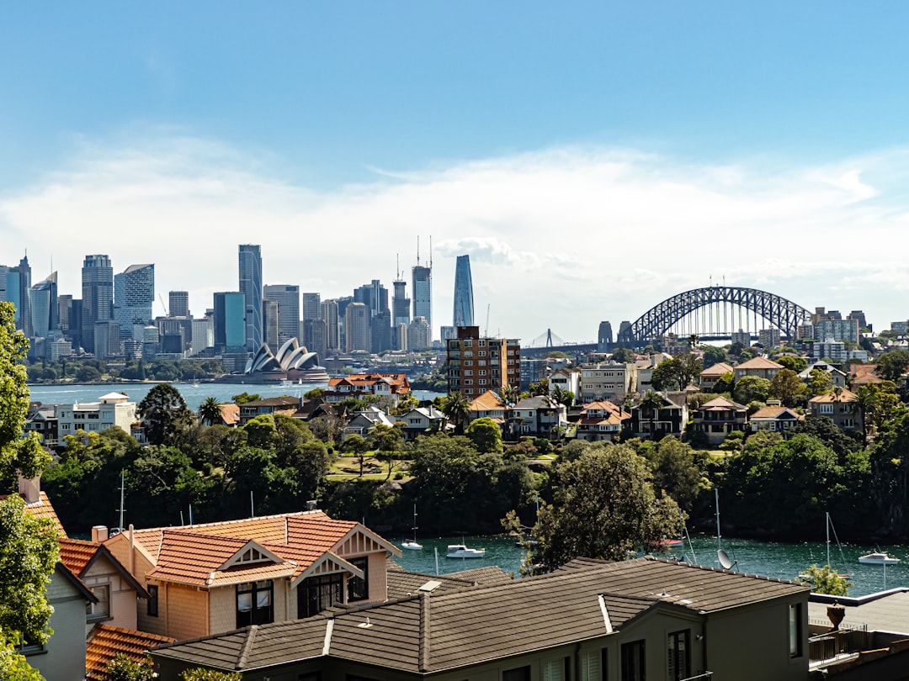

Property settlement in Sydney is the final legal step where ownership transfers, funds move and the title registers, usually completed electronically through PEXA. Professional fees for a routine matter typically run a few hundred dollars to around fifteen hundred, with government charges and searches added separately. Most private treaty purchases carry a five business day cooling off period, and either a licensed conveyancer or a solicitor can act for you.
For anyone buying or selling in Sydney, property settlement sydney questions usually come down to three things: who handles the legal work, what it costs, and how long the process takes from contract to keys. See Sydney Conveyancers for the current service details.
Property Settlement Sydney Explained
Settlement is the point where legal ownership actually changes hands. Before it, a conveyancer or solicitor reviews the contract of sale, runs title and council searches, checks for anything that could affect the property (easements, unpaid rates, zoning issues) and confirms the vendor disclosure documents are in order. On settlement day itself, the balance of the purchase price is paid, the title transfer is lodged, and the buyer becomes the registered owner under the Torrens title system used across NSW.
Most Sydney settlements now happen electronically through PEXA, the platform lenders and legal professionals use to lodge documents and exchange funds in one session rather than a physical meeting. Sydney Conveyancers notes this on its own site as part of how routine settlements are handled today.
Licensed conveyancer or solicitor: what actually differs
In NSW, either a licensed conveyancer or a solicitor can legally manage your settlement. A licensed conveyancer is regulated under the Conveyancers Licensing Act 2003 and specialises specifically in property transfers. A solicitor can do the same conveyancing work but is also qualified to advise on related legal problems, such as a dispute over a boundary, a deceased estate complication, or a contract clause that needs proper legal interpretation rather than a standard explanation.
- Routine purchase or sale with no complications: either professional is generally suitable.
- Off the plan contracts with sunset clauses, or a matter involving a legal dispute: a solicitor's broader advice role can matter more.
- Auction purchases: because NSW auctions carry no cooling off period, get the contract reviewed by either professional before you bid, not after.
Cost: what a fixed fee usually includes, and what it does not
A fixed professional fee quote for a routine Sydney conveyance typically covers the conveyancer or solicitor's own time and advice, generally landing somewhere between a few hundred dollars and around fifteen hundred. What it does not usually include are the disbursements: title searches, council and water certificates, PEXA lodgement fees and, for buyers, transfer duty itself. These are charged separately because they are government or third party costs, not the professional's fee. Before engaging anyone, get the fixed fee and the estimated disbursements in writing so there is no gap between the quote and the final bill.
The five day cooling off period, and when it does not apply
Most residential contracts bought by private treaty in NSW carry a five business day cooling off period under the Conveyancing Act 1919, running from exchange of contracts and ending at 5pm on the fifth business day. It gives a buyer a short window to withdraw, generally at the cost of a small percentage of the price, if a problem turns up after signing. It does not apply to auction purchases, which is why pre auction contract review matters more than a post signing read through. Off the plan and commercial contracts can also carry different disclosure and cooling off arrangements, so confirm the specific terms with your conveyancer or solicitor before exchange, not after.
A practical settlement checklist
Whether you are a first home buyer, a seller, or transferring a title within the family, the same checklist applies before settlement day: contract reviewed, searches back, transfer duty calculated, disbursements confirmed in writing, and the settlement date locked in with all parties. For an off the plan purchase specifically, the timing and sunset clause questions differ enough that it is worth reading a dedicated guide, such as this one on off the plan conveyancing in Sydney, before exchange.
- Get the contract reviewed early. Have a conveyancer or solicitor check the contract before you sign, or before you bid if it is an auction property.
- Confirm the fee split in writing. Ask for the fixed professional fee and the estimated disbursements as separate written figures.
- Track the cooling off window. If buying by private treaty, note the five business day cooling off deadline from exchange.
- Confirm the settlement method. Check that settlement will run through PEXA and confirm the agreed settlement date with all parties.
| Question | What applies in NSW | Why it matters |
|---|---|---|
| Who can act | Licensed conveyancer or solicitor | Both can settle; a solicitor also advises on related legal issues |
| Typical fee | A few hundred dollars to around $1,500 | Government charges and searches are separate |
| Cooling off | 5 business days, private treaty only | Does not apply at auction, so review before bidding |
| Settlement method | Electronic, via PEXA | Faster lodgement and fund transfer than paper settlement |
Common questions
How much does property settlement cost in Sydney? Professional fees for a routine matter typically run a few hundred dollars to around fifteen hundred, with government charges, searches and transfer duty added on top.
Do I need a solicitor or is a licensed conveyancer enough? Either can legally handle a routine NSW settlement. A solicitor is worth considering if your matter involves a legal dispute or complication beyond a standard transfer.
Does the cooling off period apply if I buy at auction? No. NSW auction purchases carry no cooling off period, so contract review needs to happen before you bid.
This guide covers what property settlement in Sydney involves, who can legally handle it, typical cost ranges, the NSW cooling off period, and a practical pre settlement checklist.